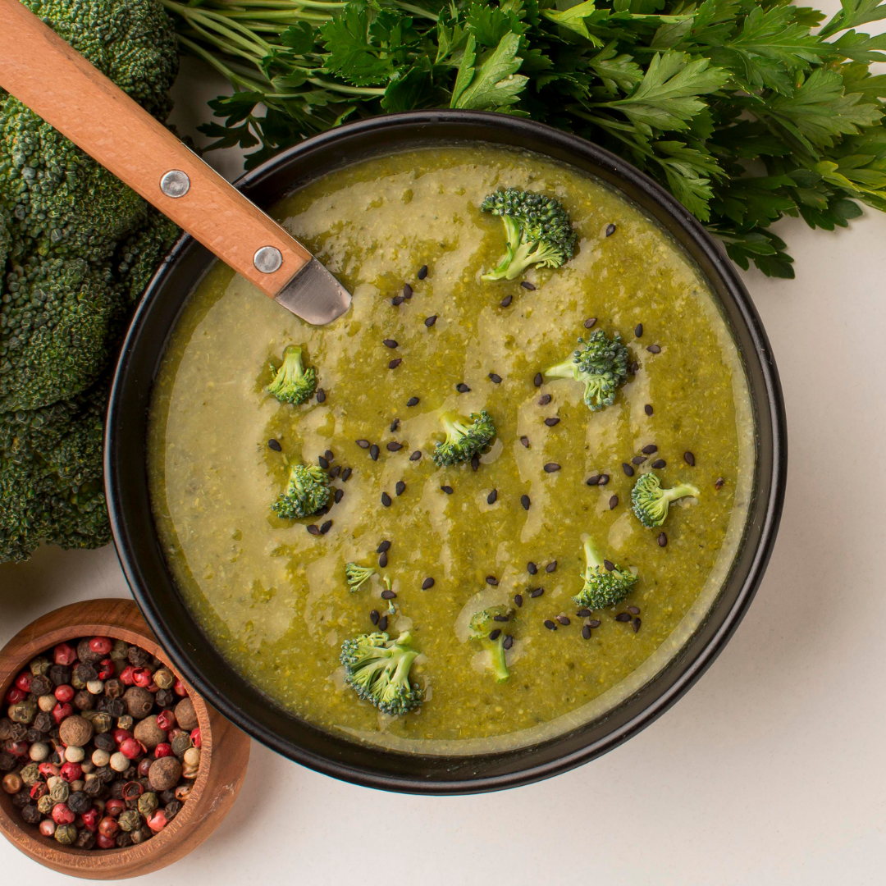

Vellutata di broccoli e cannellini
Ingredienti: 400 g di broccoli, 1 patata, 1 cipollotto o porro, 250 g di fagioli (se precotti, sgocciolati), 1 l di brodo vegetale, 3 cucchiai di panna vegetale, sale, pepe e olio.
Le dosi delle ricette sono per due persone.
Fai click sulle foto per scoprirle.
Ingredienti: 400 g di broccoli, 1 patata, 1 cipollotto o porro, 250 g di fagioli (se precotti, sgocciolati), 1 l di brodo vegetale, 3 cucchiai di panna vegetale, sale, pepe e olio.
Ingredienti: 1 kg di patate gialle, 200 g di provola affumicata a fette, burro, pangrattato, parmigiano grattugiato, sale, olio, pepe e rosmarino.